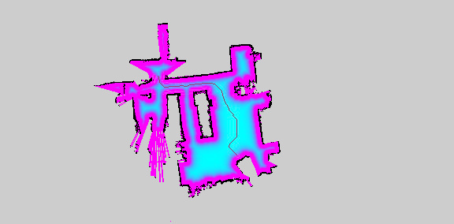

A* Pathfinding Algorithm in Occupancy Maps
In this project my goal was to use occupancy grid maps to perform real-time path planning, for the sake of efficiciency I implemented everything in C++ and the OpenCV library.
Pathfinding Pipeline
 An occupancy map are a probabilistic representation of the environment. The basic idea of the occupancy grid is to represent a map of the environment as an evenly spacedfield of binary random variables ,represented as cells, each representing the presence of an obstacle at that location inthe environment.
To perform pathfinding the map is thought as a more general graph structure: nodes represent the space locations of the cells and edges connect a cell to its neighbours.
An occupancy map are a probabilistic representation of the environment. The basic idea of the occupancy grid is to represent a map of the environment as an evenly spacedfield of binary random variables ,represented as cells, each representing the presence of an obstacle at that location inthe environment.
To perform pathfinding the map is thought as a more general graph structure: nodes represent the space locations of the cells and edges connect a cell to its neighbours.
Although the algorithm aims to find the lowest cost path, and this is difficult if every node does not have a cost associated to it, everything which is not a wall is the same.
So the occupancy map will be used to compute a costmap in such a way locations closer to obstacles will have a higher cost and avoided by the algorithm.
The fist step is computing the euclidean distance of any cell from the closest obstacle, in this regard storing the maps in Matrix format and using Opencv's Distance Trasform was very usefull.
By applyng a binary mask on the freespace, computing the distance is very straightforard distanceTransform(input_map, distance_map, DIST_L2, 5); . The output is a float matrix where every element(pixel) is the pixel-distance value oh that element to the closest black(occupied space!) pixel.
While this pixel distance is an aprroximation of the actual distance, the map resolution can be later used ho have a very good estimate.
 The distance value of every cell is used to compute its actual cost. The cost function assign maximum cost (
The distance value of every cell is used to compute its actual cost. The cost function assign maximum cost (255) to cells whose distance is lower than the robot size, then it has a rapidly decreasing exponential cost int cost = (255 *std::exp(-1.0 * weight_ * (euclidean_distance - inscribed_radius_));.
The resuting costmap is then used as input graph structure for the A Star algorithm.
 Without explaining the agorithm in detail, when looking for a path (in wich order exploring the nodes) to the goal location, A Star acounts for two factors: the actual cost associated to that node plus an additional cost determined by an heuristic function.
The heuristic cost is the estimated distance of that location to the goal, this makes so the algorithm prefers potential paths wich seem to lead close to the goal, other than being distant from obstacles, this result in much faster execution time!
Without explaining the agorithm in detail, when looking for a path (in wich order exploring the nodes) to the goal location, A Star acounts for two factors: the actual cost associated to that node plus an additional cost determined by an heuristic function.
The heuristic cost is the estimated distance of that location to the goal, this makes so the algorithm prefers potential paths wich seem to lead close to the goal, other than being distant from obstacles, this result in much faster execution time!
Results
This overlay shows the freespace cost and the path selected by the algorithm. References
- Red Blob Games blog Outstanding resurece on A* theory and implemntation.
- ROS costmap Wiki.
- ROS navigation stack repository.